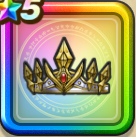

世界樹の宝冠
攻略班 7.5点 / けもの系への耐性+5%悪魔系への耐性+5%けもの系への耐性+5%エレメント系への耐性+5%暴嵐の四天王へのダメージ+10%【バトマス】スキルの斬撃ダメージ+2%イオ属性斬撃・体技ダメージ+5%
くわしい特徴
【レベル別習得スキル】 Lv1けもの系への耐性+5% Lv5暴嵐の四天王へのダメージ+10% Lv8すばやさ+5 Lv10悪魔系への耐性+5% Lv12【バトマス】スキルの斬撃ダメージ+2% Lv15イオ属性斬撃・体技ダメージ+5% Lv18けもの系への耐性+5% Lv20【バトマス】さいだいMP+5 Lv23守備力+7 Lv25エレメント系への耐性+5% 【限界突破スキル】 1凸攻撃力+5 2凸守備力+5 3凸すばやさ+5 4凸さいだいHP+10